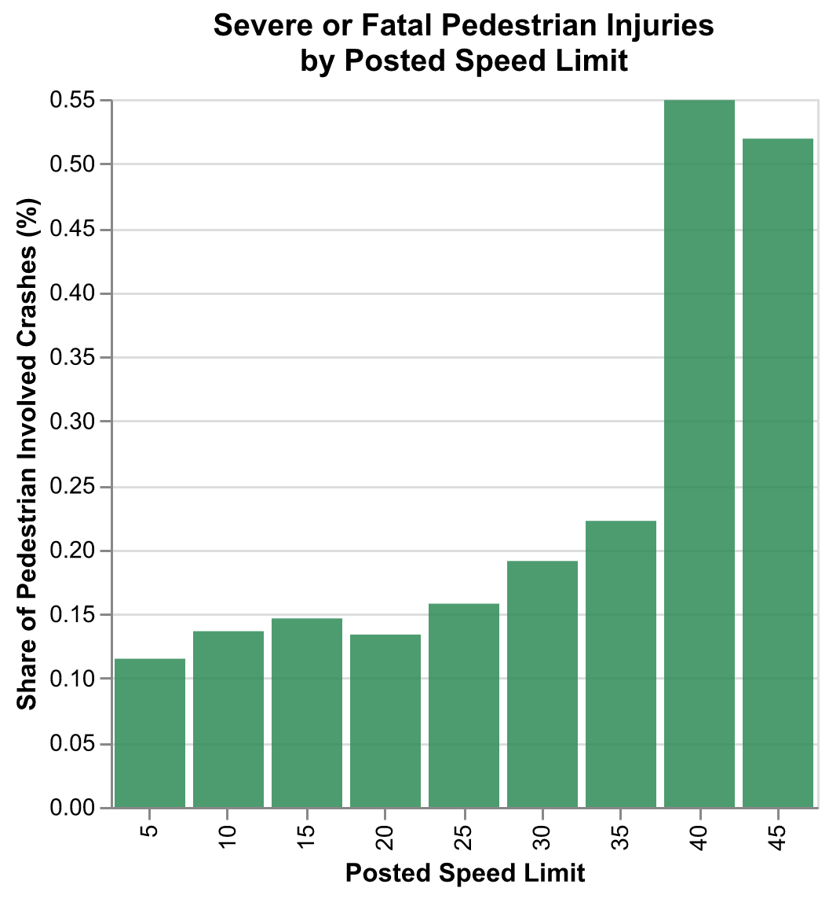
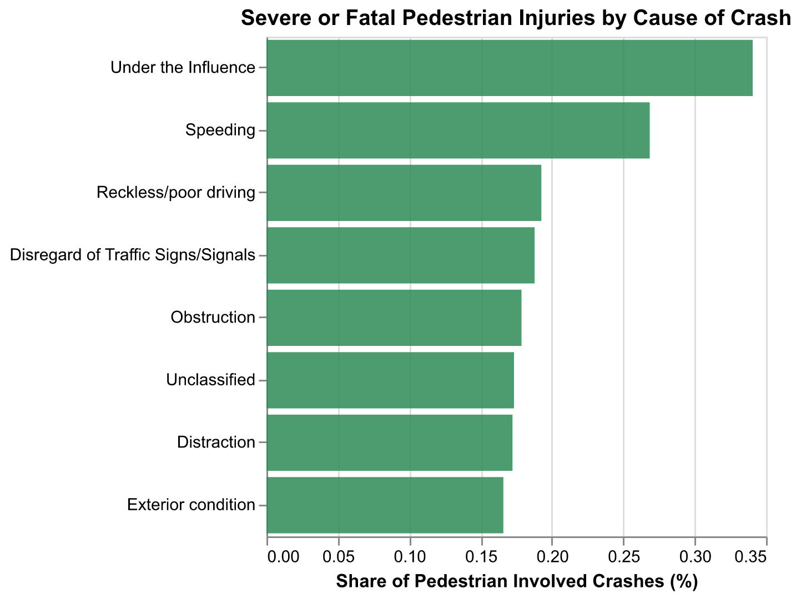
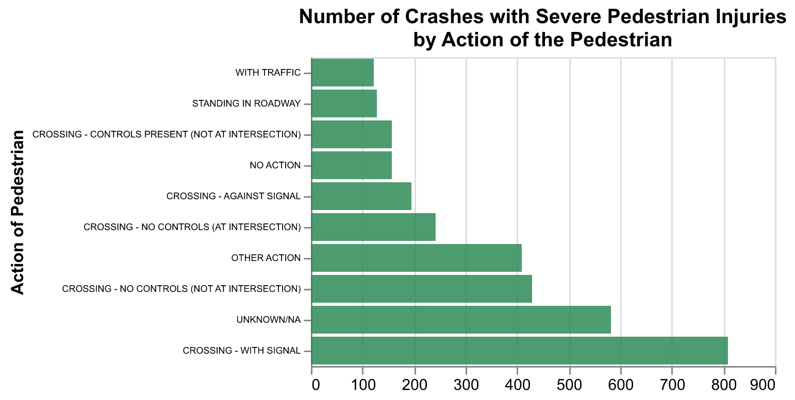

Pedestrian Safety on Chicago Roads
Introduction
Over the past decade, traffic fatalities among pedestrians and bicyclists have increased substantially in Northeastern Illinois. In 2014, there were 400 pedestrian fatalities in this region; in 2023, the number of pedestrian fatalities had increased to nearly 600 (CMAP 2024). Due to this rise in traffic fatalities, the state of Illinois is considering lowering the statutory speed limit in urban areas from 30 mph to 25 mph. If adopted, this measure would decrease the speed limit on most city roads within Chicago.
Using traffic crash report data from the city of Chicago, our project seeks to answer two main questions:
- Does the crash report data suggest that lowering the statutory speed limit from 30 mph to 25 mph would reduce severe pedestrian involved crashes?
- Are there other ways the city of Chicago can reduce severe pedestrian injuries resulting from crashes?
Data and Methods
To conduct our analyses, we use the Traffic Crashes datasets from The Chicago Data Portal. Specifically, we use the crashes dataset, which has information on traffic crashes from September 2017-October 2024. This dataset is at the crash record level and includes the location of the crash, the cause of the crash, and the speed limit on the road of the crash. We also use the people dataset, which contains information on the people (both within and external to the vehicle) involved in each crash and the injuries they sustained. Because it is at the person level, there are multiple observations per crash. Lastly, we use the Chicago roads and the Chicago community area shapefiles, also from the Chicago Data Portal.
We focus our analysis on crashes that cause severe pedestrian injuries. To do so, we first subset the people dataset to observations where the person is classified as “pedestrian”. To calculate severe pedestrian crashes, we subset our people dataset to pedestrians who had an injury classified as “incapacitating injury” or “fatal”. We aggregate both the pedestrian and severe pedestrian subsets to the crash level by counting the total number of observations (pedestrians) belonging to each crash record. We then merge both subsets to the crash dataset on the unique crash record. Some of our analyses look at the share of pedestrian crashes that caused severe injuries. To calculate this, we divide the number of severe pedestrian injuries by the total number of pedestrians involved in crashes (at some level of aggregation, such as posted speed limit, road, etc.).
For the Shiny app, we calculate the number of severe crashes on each road within a neighborhood. To do so, we first join the community area name to the roads geodataframe via a spatial join. Then, we subset the road and community area geodataframes to the community area inputted by the user. To join the road names in the road data to the crash points in our crash data, we first create a 0.00025 degree buffer around each road. Then, we spatially join the crash data to the road buffers using the “within” method. The buffer allows us to capture the crash points that happen along a given road. We then group by the road name and calculate the number of crashes on each road. To calculate the number of severe crashes within each neighborhood, we join the community area name to each point in the pedestrian crash data via a spatial join. This allows us to subset to the inputted community area, group by community area, and count the number of crashes within each area.
Results
Our analysis begins by examining the relationship between the posted speed limit on which the crash occurred and the severity of the injuries sustained by pedestrians. The majority of Chicago roads have a speed limit of 30mph (the current statutory speed limit). Thus, instead of looking at the number of severe pedestrian crashes, we look at the share of total pedestrian crashes that caused severe or fatal injuries by speed limit. As seen from Figure A, the share crashes causing severe pedestrian injuries increases with the posted speed limit. This share doubles when the posted speed limit increases from 35mph to 40mph. Interestingly, the share of crashes causing severe pedestrian injuries only slightly increases between 25 to 30 mph, signifying the proposed speed limit change may not drastically impact the number of pedestrian injuries.



As the action of the pedestrian at the time of the crash could have large impacts on the severity of their injuries, we next turned the ten most common actions of pedestrians that result in severe or fatal pedestrian injuries. Figure C shows that crossing with signal accounted for the highest number of pedestrian crashes causing severe injuries. This was approximately double the number of crashes with severe injuries for all other documented actions (excluding NAs). Even when pedestrians are obeying traffic laws, they are being struck by vehicles and severely injured, suggesting the pedestrians are not at fault.
We next look towards the cause of the car crash. After grouping causes into eight categories, we examined the percentage of total pedestrian crashes causing severe or fatal injuries by the cause of the crash. From Figure B, it is clear that both driving under the influence and speeding were most directly correlated with severe pedestrian injuries from crashes, while the other six causes had roughly the same severity. Connecting this back to our first visualization, the share severe by posted speed limit, an important question remains - are drivers more likely to cause severe pedestrian injuries at higher posted speed limits, or are drivers more likely to speed at higher posted speed limits, which in turn leads to a higher share of severe pedestrian injuries? We return to this question in the Conclusion.
Finally, we created a Shiny app dashboard. The dashboard allows a user to select a neighborhood to display a map of the neighborhood roads colored by the number of severe pedestrian crashes on each street and a map of all Chicago neighborhoods colored by the number of severe pedestrian crashes. At the top, a table displays the three most dangerous streets for pedestrians in each selected neighborhood, as well as the number of severe pedestrian crashes and posted speed limit on each road. The dashboard is useful for pedestrians to determine which neighborhoods and roads are safer for pedestrians. It is also useful for policymakers to determine which neighborhoods and roads are in most immediate need of pedestrian safety policy changes.
Recommendations
Based off of our investigation, we have several recommendations for the city of Chicago. Our analyses show that speeding plays a leading role in causing severe pedestrian injuries from crashes. We recommend implementing road diets, which includes reducing the number of lanes on roads, narrowing lanes, and adding wider shoulders, bike lanes, and sidewalks. These modifications make it harder to speed and make roadways safer for pedestrians and cyclists.
Our second recommendation is based off the finding that the largest number of crashes causing severe pedestrians injuries happen when pedestrians are legally crossing at marked intersections. We suggest that speed monitoring devices and other alert devices be added to roads with heavy pedestrian traffic. These devices can signal to drivers that they are speeding or that they are approaching an intersection where pedestrians are crossing. These modifications are essential for reducing the number of severe pedestrian injuries.
Conclusion
In conclusion, we have uncovered potential causes for severe pedestrian injuries from crashes which have policy implications for the city. As this is a preliminary investigation, future work should involve conducting randomized control trials with our recommendations listed above to determine which policy interventions are most effective at reducing pedestrian injuries from crashes. Additionally, our data was rather limited. For example, while we have data on the posted speed limit, we do not have data on the speed the driver was going at the time of the crash. Using other data, such as traffic cameras at intersections, to study pedestrian involved crashes in more detail would be beneficial to understand the root causes of these incidents.